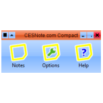

-

CESNote.com Compact
Available : 5th May 2008 (Beta 1)
Version : 1.0.0.1 (Beta 1)
Download / Size : Executable (.exe) / 580KB
- Screenshots
- Notes
- Features
-
Beyond Desktop Notes - Choose from a variety of Notes to suit your needs, with Desktop note for Rich Text Notes, Doodle note for basic drawing, Task note for to-do lists and Photo note for displaying your favourite photos.
Manage - One-stop-shop for all Notes is the Notes feature! This allows you to create the notes, plus view all the notes you have saved and you can even filter the list by Note and Flag, plus see only those marked as Favourite.
Customise - Change the colour scheme used on the toolbars and main toolbar easily from the Options, choose from various styles and also other settings such as what to do when the application starts and more!
Helpful - All notes support Flags for ease of reference set your home related Notes with a Green flag, and the Important ones with a Red flag, it's up to you! Plus you can mark a Note as a favourite making it easier to find in the Notes feature. You can even set an Alert to have a note appear at a particular date and time.
- System Requirements
-
- Install: Just Download the Executable to any location you like on your Computer, then Double Click or Launch the Program normally from there.
- Framework: .NET Framework 3.0 or Later
- Operating System: Beta 1 works on Windows Vista (32 / 64 bit), however Windows XP does not display icons correctly this will be resolved in Beta 2.
- Drive Space: 580KB for Installation, will create a "Notes" Folder with in the Documents folder of the logged in User eg My Documents/Notes or Documents/Notes
- Beta:This is the first build of CESNote.com Compact to be released it does not contain all features however is a preview of what is to come, feel free to report problems and issues, including suggestions!

{kind=link}
{kind=link}
{kind=link}
{kind=link}
{kind=link}
{kind=link}
{kind=link}